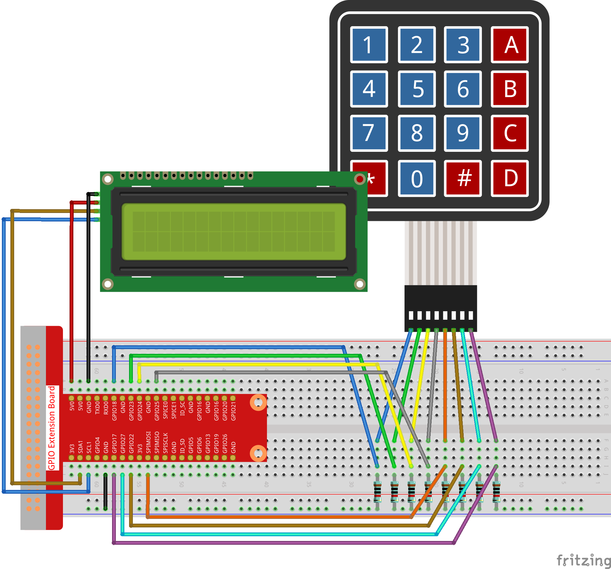

Note
Bonjour, bienvenue dans la communauté SunFounder pour les passionnés de Raspberry Pi, Arduino et ESP32 sur Facebook ! Plongez plus profondément dans le monde de Raspberry Pi, Arduino et ESP32 avec d’autres passionnés.
Pourquoi nous rejoindre ?
Support d’experts : Résolvez les problèmes après-vente et les défis techniques avec l’aide de notre communauté et de notre équipe.
Apprendre & Partager : Échangez des astuces et des tutoriels pour améliorer vos compétences.
Aperçus exclusifs : Recevez en avant-première les annonces de nouveaux produits et des aperçus exclusifs.
Réductions spéciales : Profitez de réductions exclusives sur nos nouveaux produits.
Promotions festives et cadeaux : Participez à des concours et à des promotions spéciales pendant les fêtes.
👉 Prêt à explorer et créer avec nous ? Cliquez sur [Ici] et rejoignez-nous dès aujourd’hui !
3.1.12 JEU – Devine le Nombre
Introduction
« Deviner le Nombre » est un jeu amusant où vous et vos amis tour à tour entrez un nombre (0~99). La plage de valeurs se réduit au fur et à mesure que les joueurs entrent des nombres, jusqu’à ce que quelqu’un devine correctement le nombre mystère. Ce joueur est alors considéré comme perdant et reçoit une punition. Par exemple, si le nombre mystère est 51 (non visible par les joueurs), et que le joueur ①entre 50, la plage de nombres passe à 50~99 ; si le joueur ② entre 70, la plage devient 50~70 ; et si le joueur ③ entre 51, ce joueur perd. Ici, nous utilisons un clavier pour entrer les nombres et un écran LCD pour afficher les résultats.
Composants

Schéma de câblage
T-Board Name |
physical |
wiringPi |
BCM |
GPIO18 |
Pin 12 |
1 |
18 |
GPIO23 |
Pin 16 |
4 |
23 |
GPIO24 |
Pin 18 |
5 |
24 |
GPIO25 |
Pin 22 |
6 |
25 |
SPIMOSI |
Pin 19 |
12 |
10 |
GPIO22 |
Pin 15 |
3 |
22 |
GPIO27 |
Pin 13 |
2 |
27 |
GPIO17 |
Pin 11 |
0 |
17 |
SDA1 |
Pin 3 |
SDA1(8) |
SDA1(2) |
SCL1 |
Pin 5 |
SCL1(9) |
SDA1(3) |

Procédures expérimentales
Étape 1 : Construire le circuit.
{kind=link}
Étape 2 : Configurer I2C (voir l’Annexe. Si vous avez déjà configuré I2C, passez cette étape.)
Pour les utilisateurs du langage C
Étape 3 : Changer de répertoire.
cd ~/davinci-kit-for-raspberry-pi/c/3.1.12/
Étape 4 : Compiler.
gcc 3.1.12_GAME_GuessNumber.c -lwiringPi
Étape 5 : Exécuter.
sudo ./a.out
Après le démarrage du programme, l’écran LCD affiche la page d’accueil :
Welcome!
Press A to go!
Appuyez sur “A†pour lancer le jeu, et la page de jeu apparaîtra sur l’écran LCD.
Entrez le nombre :
0 ‹point‹ 99
Note
Si cela ne fonctionne pas après l’exécution ou si un message d’erreur s’affiche : « wiringPi.h: No such file or directory », veuillez vous référer à C code is not working?.
Un nombre aléatoire “point†est généré mais non affiché sur l’écran LCD au début du jeu, et votre objectif est de le deviner. Le nombre que vous avez saisi apparaît à la fin de la première ligne jusqu’à ce que le calcul final soit effectué. (Appuyez sur “D†pour lancer la comparaison, et si le nombre saisi est supérieur à 10, la comparaison se déclenchera automatiquement.)
La plage de valeurs du “point†s’affiche sur la seconde ligne. Vous devez entrer un nombre dans cette plage. À chaque saisie, la plage se réduit ; si vous trouvez le nombre chanceux, ou si vous perdez, l’écran affichera « Vous avez trouvé ! ».
Explication du code
Au début du code, on trouve les fonctions de base pour le clavier et l†I2C LCD1602. Vous pouvez en apprendre davantage sur ces éléments dans les sections 1.1.7 I2C LCD1602 et 2.1.5 Keypad.
Voici les points clés à connaître :
/****************************************/
//Début du code
/****************************************/
void init(void){
    fd = wiringPiI2CSetup(LCDAddr);
    lcd_init();
    lcd_clear();
    for(int i=0 ; i<4 ; i++) {
        pinMode(rowPins[i], OUTPUT);
        pinMode(colPins[i], INPUT);
    }
    lcd_clear();
    write(0, 0, "Welcome!");
    write(0, 1, "Press A to go!");
}
Cette fonction initialise l”I2C LCD1602 et le clavier tout en affichant « Bienvenue! » et « Appuyez sur A! ».
void init_new_value(void){
    srand(time(0));
    pointValue = rand()%100;
    upper = 99;
    lower = 0;
    count = 0;
    printf("point is %d\n",pointValue);
}
La fonction génère un nombre aléatoire “point†et réinitialise les limites du jeu.
bool detect_point(void){
    if(count > pointValue){
        if(count < upper){
            upper = count;
        }
    }
    else if(count < pointValue){
        if(count > lower){
            lower = count;
        }
    }
    else if(count = pointValue){
        count = 0;
        return 1;
    }
    count = 0;
    return 0;
}
La fonction detect_point() compare le nombre saisi avec le « point » généré. Si les nombres sont différents, count est utilisé pour ajuster les valeurs de upper et lower, et renvoie “0”. S’ils sont identiques, elle renvoie “1”.
void lcd_show_input(bool result){
    char *str=NULL;
    str =(char*)malloc(sizeof(char)*3);
    lcd_clear();
    if (result == 1){
        write(0,1,"You've got it!");
        delay(5000);
        init_new_value();
        lcd_show_input(0);
        return;
    }
    write(0,0,"Enter number:");
    Int2Str(str,count);
    write(13,0,str);
    Int2Str(str,lower);
    write(0,1,str);
    write(3,1,"<Point<");
    Int2Str(str,upper);
    write(12,1,str);
}
Cette fonction affiche la page de jeu. La fonction Int2Str(str,count) convertit les variables count, lower, et upper d”entier en chaîne de caractères pour l’affichage correct sur l”LCD.
int main(){
    unsigned char pressed_keys[BUTTON_NUM];
    unsigned char last_key_pressed[BUTTON_NUM];
    if(wiringPiSetup() == -1){ //when initialize wiring failed,print messageto screen
        printf("setup wiringPi failed !");
        return 1;
    }
    init();
    init_new_value();
    while(1){
        keyRead(pressed_keys);
        bool comp = keyCompare(pressed_keys, last_key_pressed);
        if (!comp){
            if(pressed_keys[0] != 0){
                bool result = 0;
                if(pressed_keys[0] == 'A'){
                    init_new_value();
                    lcd_show_input(0);
                }
                else if(pressed_keys[0] == 'D'){
                    result = detect_point();
                    lcd_show_input(result);
                }
                else if(pressed_keys[0] >='0' && pressed_keys[0] <= '9'){
                    count = count * 10;
                    count = count + (pressed_keys[0] - 48);
                    if (count>=10){
                        result = detect_point();
                    }
                    lcd_show_input(result);
                }
            }
            keyCopy(last_key_pressed, pressed_keys);
        }
        delay(100);
    }
    return 0;
}
La fonction Main() contient l’ensemble du processus du programme, tel que décrit ci-dessous :
Initialiser l”I2C LCD1602 et le clavier.
Utiliser init_new_value() pour créer un nombre aléatoire entre 0 et 99.
Vérifier si un bouton a été pressé et lire sa valeur.
Si le bouton 'A' est pressé, un nombre aléatoire entre 0 et 99 est généré et le jeu commence.
- Si le bouton 'D' est détecté comme pressé, le programme passe à l’étape de
comparaison et affiche le résultat sur l’écran LCD. Cette étape permet également
de juger le résultat en appuyant seulement sur un chiffre et ensuite sur le bouton 'D'.
Si un des boutons 0-9 est pressé, la valeur de count sera modifiée ; si count est supérieur à 10, la comparaison démarre.
Les changements de jeu et leurs valeurs sont affichés sur l”LCD1602.
Pour les utilisateurs Python
Étape 3 : Accéder au répertoire.
cd ~/davinci-kit-for-raspberry-pi/python/
Étape 4 : Exécuter le programme.
sudo python3 3.1.12_GAME_GuessNumber.py
Après le démarrage du programme, la page initiale s’affiche sur l’écran LCD :
Welcome!
Press A to go!
Appuyez sur 'A', et le jeu commencera. La page du jeu apparaîtra sur l’écran LCD.
Enter number:
0 ‹point‹ 99
Un nombre aléatoire 'point' est généré mais n’est pas affiché sur l’écran LCD au début du jeu, et votre objectif est de le deviner. Le nombre que vous avez saisi s’affiche à la fin de la première ligne jusqu’à ce que le calcul final soit terminé. (Appuyez sur 'D' pour démarrer la comparaison, et si le nombre saisi est supérieur à 10, la comparaison automatique commencera.)
L’intervalle de nombres pour 'point' est affiché sur la seconde ligne. Vous devez taper un nombre dans cet intervalle. À chaque tentative, l’intervalle se rétrécit ; si vous trouvez le nombre chanceux par hasard, l’écran affichera « Vous avez trouvé! »
Code
Note
Vous pouvez Modifier/Réinitialiser/Copier/Exécuter/Arrêter le code ci-dessous.
Mais avant cela, vous devez accéder au chemin source du code comme davinci-kit-for-raspberry-pi/python.
import RPi.GPIO as GPIO
import time
import LCD1602
import random
##################### LIBRAIRIE KEYPAD ADAPTÉE D'ARDUINO ############
#class Key: Définition de quelques propriétés de Key
class Keypad():
def __init__(self, rowsPins, colsPins, keys):
self.rowsPins = rowsPins
self.colsPins = colsPins
self.keys = keys
GPIO.setwarnings(False)
GPIO.setmode(GPIO.BCM)
GPIO.setup(self.rowsPins, GPIO.OUT, initial=GPIO.LOW)
GPIO.setup(self.colsPins, GPIO.IN, pull_up_down=GPIO.PUD_DOWN)
def read(self):
pressed_keys = []
for i, row in enumerate(self.rowsPins):
GPIO.output(row, GPIO.HIGH)
for j, col in enumerate(self.colsPins):
index = i * len(self.colsPins) + j
if (GPIO.input(col) == 1):
pressed_keys.append(self.keys[index])
GPIO.output(row, GPIO.LOW)
return pressed_keys
################ DÉBUT DU CODE D'EXEMPLE ################
count = 0
pointValue = 0
upper=99
lower=0
def setup():
global keypad, last_key_pressed,keys
rowsPins = [18,23,24,25]
colsPins = [10,22,27,17]
keys = ["1","2","3","A",
"4","5","6","B",
"7","8","9","C",
"*","0","#","D"]
keypad = Keypad(rowsPins, colsPins, keys)
last_key_pressed = []
LCD1602.init(0x27, 1) # init(adresse esclave, lumière de fond)
LCD1602.clear()
LCD1602.write(0, 0, 'Welcome!')
LCD1602.write(0, 1, 'Press A to Start!')
def init_new_value():
global pointValue,upper,count,lower
pointValue = random.randint(0,99)
upper = 99
lower = 0
count = 0
print('point is %d' %(pointValue))
def detect_point():
global count,upper,lower
if count > pointValue:
if count < upper:
upper = count
elif count < pointValue:
if count > lower:
lower = count
elif count == pointValue:
count = 0
return 1
count = 0
return 0
def lcd_show_input(result):
LCD1602.clear()
if result == 1:
LCD1602.write(0,1,'You have got it!')
time.sleep(5)
init_new_value()
lcd_show_input(0)
return
LCD1602.write(0,0,'Enter number:')
LCD1602.write(13,0,str(count))
LCD1602.write(0,1,str(lower))
LCD1602.write(3,1,' < Point < ')
LCD1602.write(13,1,str(upper))
def loop():
global keypad, last_key_pressed,count
while(True):
result = 0
pressed_keys = keypad.read()
if len(pressed_keys) != 0 and last_key_pressed != pressed_keys:
if pressed_keys == ["A"]:
init_new_value()
lcd_show_input(0)
elif pressed_keys == ["D"]:
result = detect_point()
lcd_show_input(result)
elif pressed_keys[0] in keys:
if pressed_keys[0] in list(["A","B","C","D","#","*"]):
continue
count = count * 10
count += int(pressed_keys[0])
if count >= 10:
result = detect_point()
lcd_show_input(result)
print(pressed_keys)
last_key_pressed = pressed_keys
time.sleep(0.1)
# Fonction pour nettoyer tout après la fin du script
def destroy():
# Libérer les ressources
GPIO.cleanup()
LCD1602.clear()
if __name__ == '__main__': # Le programme commence ici
try:
setup()
while True:
loop()
except KeyboardInterrupt: # Quand 'Ctrl+C' est pressé, la fonction destroy() sera exécutée.
destroy()
Explication du code
Au début du code, vous trouverez les fonctions liées au clavier et à l†I2C LCD1602. Vous pouvez en savoir plus à leur sujet dans les sections 1.1.7 I2C LCD1602 et 2.1.5 Clavier.
Voici ce qu’il faut savoir :
def init_new_value():
    global pointValue,upper,count,lower
    pointValue = random.randint(0,99)
    upper = 99
    lower = 0
    count = 0
    print('point is %d' %(pointValue))
Cette fonction génère un nombre aléatoire appelé “point†et réinitialise l’intervalle de recherche.
def detect_point():
    global count,upper,lower
    if count > pointValue:
        if count < upper:
            upper = count
    elif count < pointValue:
        if count > lower:
            lower = count
    elif count == pointValue:
        count = 0
        return 1
    count = 0
    return 0
La fonction detect_point() compare le nombre saisi (count) avec le nombre aléatoire “point”. Si les nombres ne sont pas identiques, count attribue de nouvelles valeurs à upper et lower, et retourne “0”. Si les nombres sont identiques, la fonction retourne “1”.
def lcd_show_input(result):
LCD1602.clear()
    if result == 1:
        LCD1602.write(0,1,'You have got it!')
time.sleep(5)
init_new_value()
lcd_show_input(0)
return
    LCD1602.write(0,0,'Enter number:')
    LCD1602.write(13,0,str(count))
    LCD1602.write(0,1,str(lower))
    LCD1602.write(3,1,' < Point < ')
    LCD1602.write(13,1,str(upper))
Cette fonction affiche l’interface du jeu.
str(count) : Étant donné que write() ne prend en charge que les chaînes de caractères (string), il est nécessaire de convertir le nombre en chaîne à l’aide de str().
def loop():
    global keypad, last_key_pressed,count
while(True):
        result = 0
        pressed_keys = keypad.read()
        if len(pressed_keys) != 0 and last_key_pressed != pressed_keys:
            if pressed_keys == ["A"]:
init_new_value()
lcd_show_input(0)
            elif pressed_keys == ["D"]:
                result = detect_point()
lcd_show_input(result)
            elif pressed_keys[0] in keys:
                if pressed_keys[0] in list(["A","B","C","D","#","*"]):
continue
                count = count * 10
                count += int(pressed_keys[0])
                if count >= 10:
                    result = detect_point()
lcd_show_input(result)
print(pressed_keys)
        last_key_pressed = pressed_keys
time.sleep(0.1)
Main() contient l’ensemble du processus du programme, comme décrit ci-dessous :
Initialiser I2C LCD1602 et Keypad.
Vérifier si un bouton est pressé et lire sa valeur.
Si le bouton “A†est pressé, un nombre aléatoire entre 0 et 99 est généré, et le jeu commence.
Si le bouton “D†est pressé, le programme effectue la comparaison et détermine le résultat.
- Si un des boutons 0-9 est pressé, la valeur de count est modifiée. Si
count est supérieur à 10, la comparaison commence.
Les changements dans le jeu et les valeurs sont affichés sur l’écran LCD1602.
Photo du phénomène